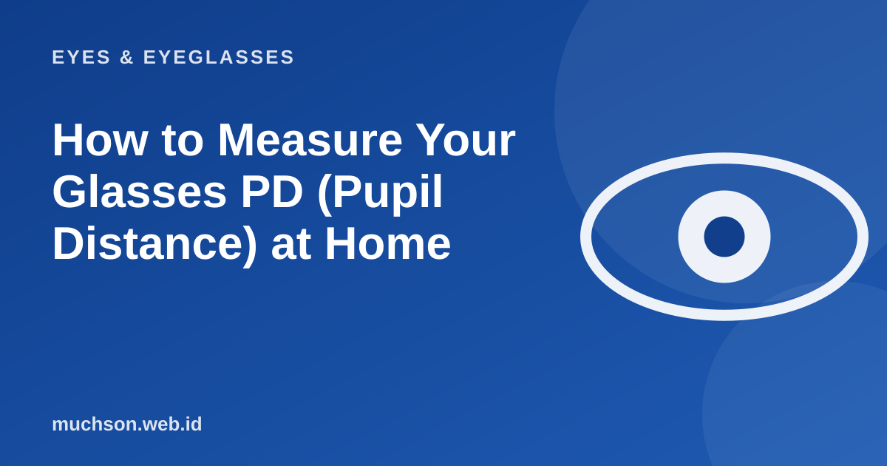

Home › Articles › Eyes & Eyeglasses
Eyes & EyeglassesHow to Measure Your Glasses PD (Pupil Distance) at Home
Many online shops ask for your PD. Ideally an optical shop measures it with a special device, but if you need it urgently you can estimate it yourself. Here is the most sensible way, and what to watch out for.

What is PD and why does it matter?
PD (pupillary distance) is the distance between the centres of the two pupils in millimetres. The optical centre of each lens has to sit exactly in front of the pupil. If it is off, you look through a part of the lens with slightly different power, which can cause dizziness, tired eyes, or vision that feels strange, especially with strong prescriptions and progressive lenses.
Text description of the diagram
- Prepare: a ruler in mm, a mirror, a helper
- Look straight: at one distant point
- Measure: from the centre of the left pupil to the right
- Repeat: three times and average
How to measure with a ruler
- Stand about 20 cm from a mirror with the ruler against your forehead or nose.
- Close one eye, open the right eye, look at your right pupil in the mirror and note the number on the ruler.
- Close the right eye, open the left eye and note the number at your left pupil.
- The difference is your total PD.
- Do it three times and take the average.
A measurement you take yourself can be off by 1 to 3 mm. For a small prescription and single-vision lenses that is usually tolerable. For a strong prescription, cylinder, and above all progressive lenses, have it measured at an optical shop.